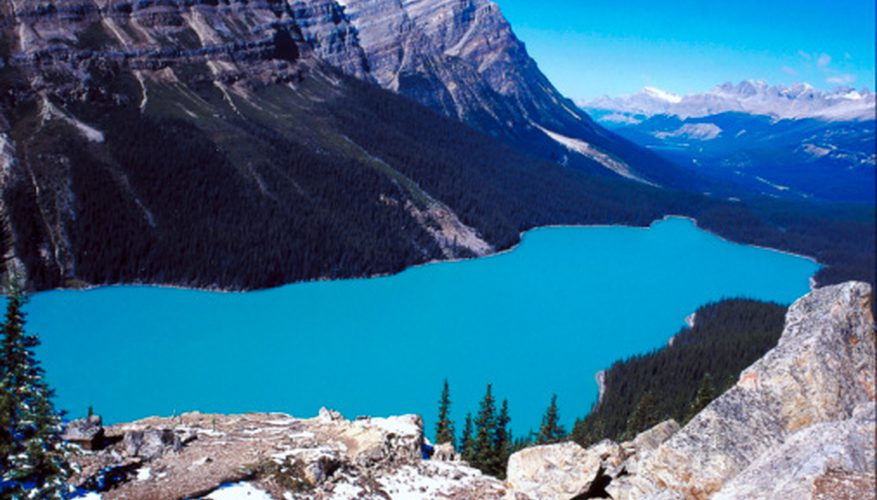

1) Acuático:Esta clase de ecosistema los seres vivos se desarrollan en el agua. Estos, adquieren características físicas muy similares entre sí como consecuencia de su adaptación al agua. En este ecosistema las variaciones de temperaturas no son muy marcadas, por lo que esta no afecta la supervivencia de los seres vivos. Este ecosistema es el de mayor tamaño ya que representan el 75%. Dentro de los ecosistemas acuáticos se encuentran los siguientes: Bentónico: estos se ubican en el fondo de los ecosistemas acuáticos. En aquellos que no son muy profundos, los principales habitantes son algas. En los de mayor profundidad, la mayoría son consumidores. Nectónicos: estos animales se desplazan con total libertad ya que gracias a sus medios de locomoción pueden adaptarse a las corrientes de agua. Plactónicos: estos seres vivos viven flotando en el agua terrestre o marina y son arrastrados por las corrientes de agua, no se trasladan por movimientos propios. Neustónicos: estos viven sobre la superficie del agua, flotando.
2) Agua dulce:Los ecosistemas de agua dulce son muy pequeños en magnitud comparados con los ecosistemas marinos cubren solamente el 0.8% de la superficie terrestre y cuentan con el 0.009% del total del agua presente en la tierra. Hay tres tipos básicos de ecosistemas de agua dulce: Lénticos, Lóticos y los Humedales.3) Ecosistema terrestre: El ecosistema que se encuentra solamente
en accidentes geográficos es conocido como ecosistema terrestre.
El factor principal que diferencia a los ecosistemas terrestres
de los acuáticos es la relativa escasez de agua en los primeros
y como resultado la importancia que el agua alcanza en estos ecosistemas
debido a la limitada disponibilidad. Otro factor es la mejor disponibilidad
de luz en estos ecosistemas así como el ambiente es mucho más limpio en la tierra que lo es en el agua.
4) Ecosistema forestal:Este ecosistema está formado por una flora abundante por lo que hay un número elevado de organismos viviendo en el mismo lugar. Esto significa que estos ecosistemas tienen tienen una densidad muy alta de organismos vivos. Los diferentes tipos de ecosistemas forestales son la selva tropical, el bosque seco o caducifolio, el bosque templado de frondosas, el bosque templado caducifolio y taiga. Los bosques son una parte muy importante de nuestro medio ambiente y por ello es necesario que los conservemos y creemos unos nuevos si es posibleContaminacion de los ecosistemas y su prevencion:Hemos hablado sobre los diferentes tipos de ecosistemas y
como se diferencian unos de otros. Estos ecosistemas son los hábitats
de todas las criaturas del planeta lo que nos recuerda la importancia que
tiene que estén limpios y libres de contaminación. Si mantenemos adecuadamente
los ecosistemas los organismos podrán vivir de forma saludable y seguir desarrollándose
y evolucionando a lo largo del tiempo.
Sin embargo, casi todos los ecosistemas hoy en día se ven afectados por la contaminación.
|
Definicion: El ecosistema es el conjunto de especies
de un área determinada que interactúan entre ellas y con su ambiente abiótico;
mediante procesos como la depredación, el parasitismo, la competencia y la simbiosis,
y con su ambiente al desintegrarse y volver a ser parte del ciclo de energía y de nutrientes.
Las especies del ecosistema, incluyendo bacterias, hongos, plantas y animales dependen unas de otras.
Las relaciones entre las especies y su medio, resultan en el flujo de materia y energía del ecosistema.
|
| Contactanos Twitteanos Mandanos mensaje | |
Copyright 2018 Mandanos un mensaje via email a studiosdace@gmail.com